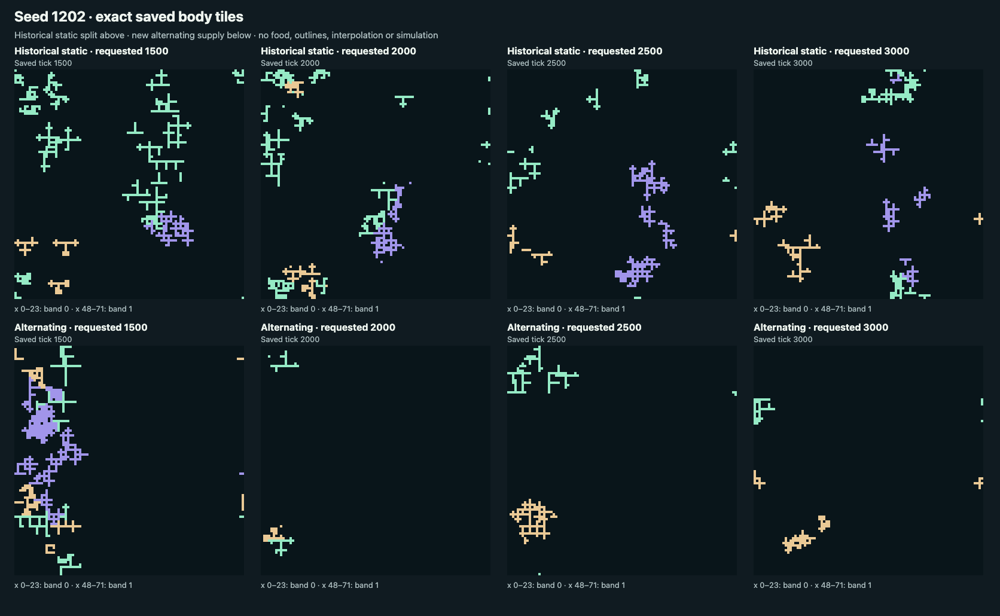

Historical static split · one alternating replication · horizon 3,000
Alternating food, one replication
The historical reference supplies both fixed 24-column bands on every pulse. The replication supplies one band at a time: columns 0–23 and 48–71 alternate every 500 ticks. Food already on the map remains in place.
Saved states only. This page opens paused and replays recorded frames at matching ages. It does not simulate, interpolate, or extend a world. Seed 1202 was chosen because an accepted static reference exists; this is not an unbiased survival sample. A single replication cannot establish food causation, superiority, or adaptation.
One new seed · 3,000 ticks · four frozen screens
No new outcome is listed
The historical reference is available, but a new result appears only after the seed-1202 record, pair index, and parent visual receipt are verified.
The historical reference's seasonal changes are descriptive and do not contribute to new-run status. The frozen screens do not measure superiority, causation, adaptation, or durable coexistence.
Replication result and limits · Recorded numbers · Checks and review
Watch the recorded pair
151 saved ages at 10 frames per second. The left side is the historical static reference; the right side is the one new outcome. Food already deposited remains when supply switches.
Compare occupied bodies at the four late ages

Scope: one seed and one independently initialized exact repeat. No additional seed, tuning, or longer horizon is included.
What the replication tells us
A comeback on one side, but the full pattern did not repeat
The new world falls from 42 bodies at tick 1,500 to just 3 at tick 1,913. It regrows to 16 at 2,500, then ends with 7. The second food band is empty at all four late checkpoints. The earlier seed 1203 passed the full screen; this seed 1202 is a Stop.
Births and deaths continue, so this is still an active miniature ecology. But activity alone was not the goal: neither persistent occupation of both bands nor the required back-and-forth growth and retreat survived this replication. No extra seed, longer run or tuning was used to rescue it.
These organisms have deliberately engineered reproduction, inheritance and mutation. The observed partial regrowth is not evidence that they learned or adapted. The left-hand static world is a saved historical reference, checked exactly before the new run; it is not a new control outcome.
A future, separately reviewed rule could keep a small food supply in both bands while alternating the larger share. That idea is not implemented here. Read the result and limits.
The animation uses 151 saved ages, with no simulation or interpolation during capture. Its exact pre-editorial HTML is preserved in the capture snapshot; this explanatory section was added afterward.
Decision record
Status: Pending
Waiting for the listed run and parent visual receipt.
Checking the listed saved evidence…
No alternating-food replication pair is listed yet.
The historical split reference remains available. No new outcome has been recorded on this page.
The listed evidence could not be verified.
No replay frame or decision was shown.
Recorded bodies, food, and feeding schedule
Same age · same timeline
Paused · recorded replay
- Living bodies
- —
- Families (mint / gold / lilac)
- —
- Occupied tiles
- —
- Programs
- —
- Band 0 / band 1 occupied
- —
- Food remaining
- —
- Living bodies
- —
- Families (mint / gold / lilac)
- —
- Occupied tiles
- —
- Programs
- —
- Band 0 / band 1 occupied
- —
- Food remaining
- —
- Food offered / accepted / overflow
- —
- Currently supplied band
- Band 0 · columns 0–23
Use ← and → to step through saved frames. If a run ended early, its actual terminal frame is held; no later frame is invented.
Seasonal occupied-tile changes
Counts include body tiles in columns 0–23 and 48–71. Gaps are not counted. At least one complete block must gain 20 tiles in its fed band and lose 20 in the other band.
| Ages | Fed band | Static split change | Alternating change | Screen |
|---|---|---|---|---|
| Waiting for verified saved frames. | ||||
The static reference’s three late blocks do not meet the frozen growth/retreat threshold. This descriptive result does not change the new-run status.
Frozen screens
- Activity
- Pending evidence check
- Both bands occupied at 2,500 and 3,000
- Pending evidence check
- Seasonal numerical response
- Pending evidence check
- Parent visual review
- Pending a SHA-bound visual receipt
Same-age body-only review
- Pending the parent visual receipt for ticks 1,500, 2,000, 2,500, and 3,000.
Parent review must name a concrete expanding cluster in the supplied band and a cleared cluster or gap in the other band for a numerically qualifying block. It must also describe a body-tile change from 2,500 to 3,000. Uncertain observations fail.
What this replay can show
Alternating supply changes both timing and local feeding intensity. Seasonal occupancy is descriptive evidence from one selected seed, not evidence of food causation, individual movement, adaptation, superiority, or durable coexistence. The static reference has no qualifying late seasonal block under this screen.